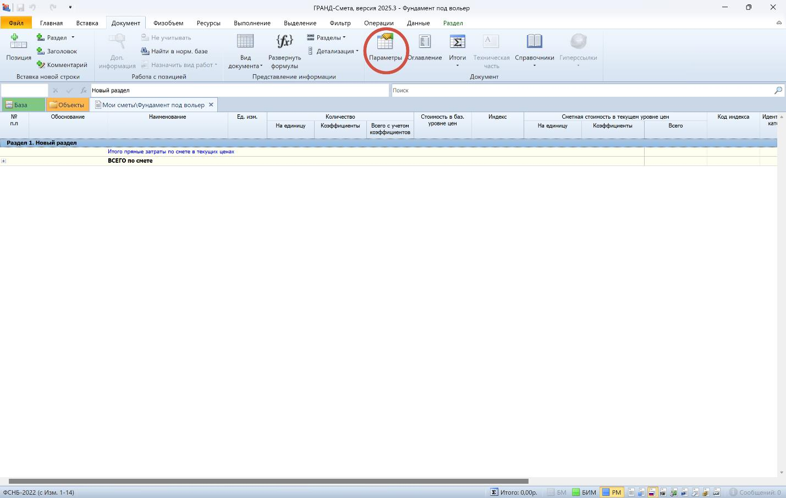
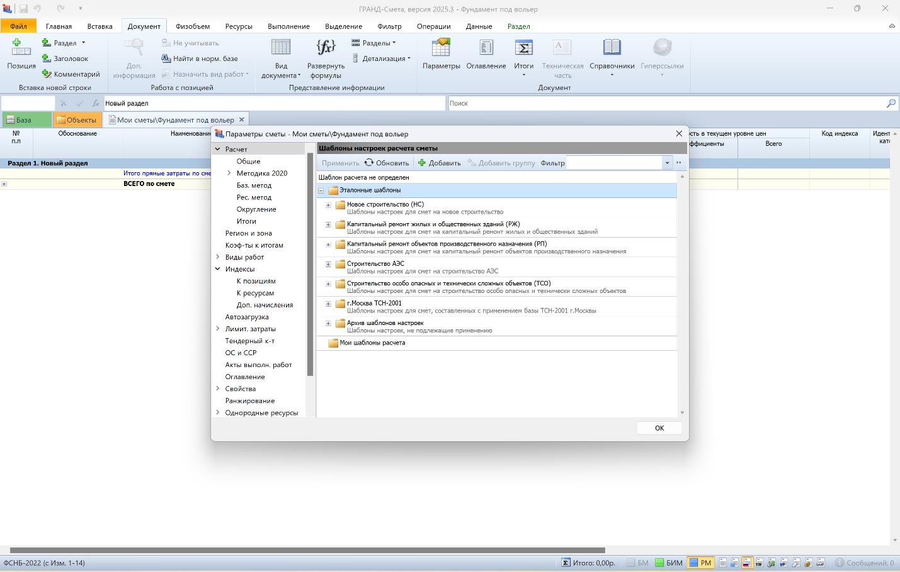
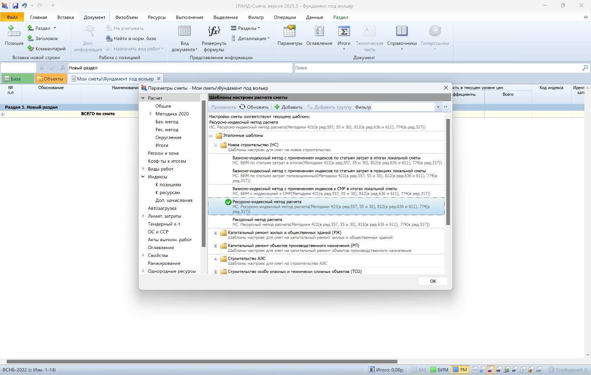
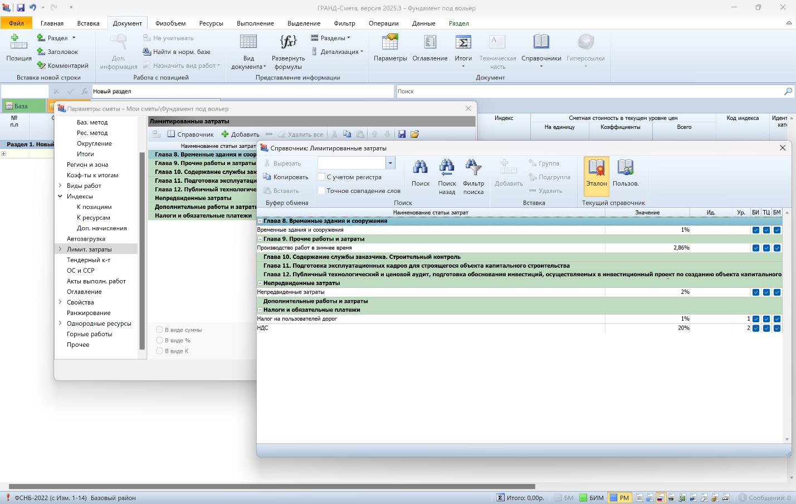
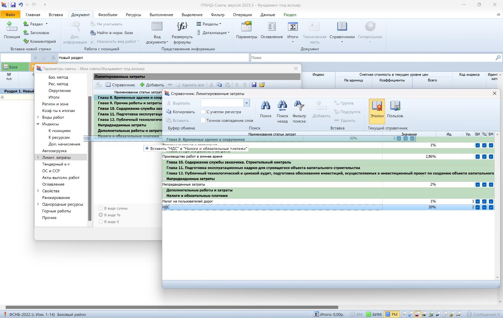
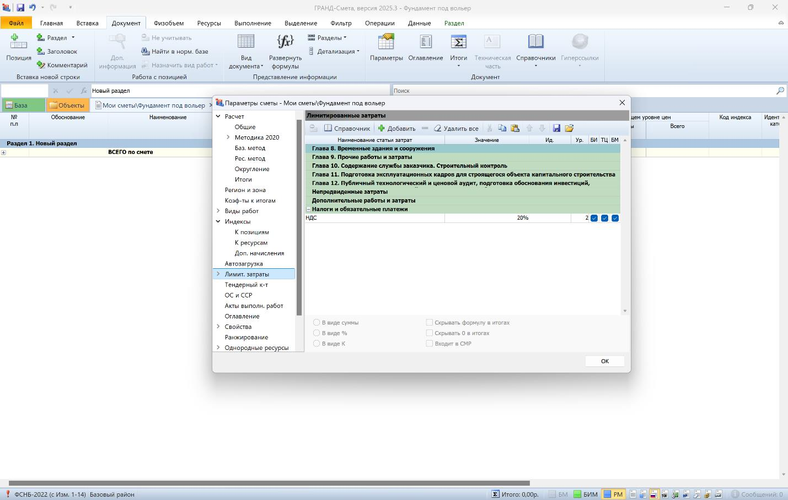

Заполнение параметров

На этом уроке научимся заполнять основные параметры нашего сметного расчета.
После того как мы создали смету, нужно заполнить параметры сметного расчета:

Щелкаем по кнопке «Параметры» и поехали по порядку:
Из эталонных шаблонов выбираем один из них, подходящий нам по виду строительства объекта:
- Новое строительство;
- Капитальный ремонт жилых и общественных зданий;
- Капитальный ремонт объектов производственного назначения;
- Строительство объектов АЭС;
- Строительство особо опасных и технически сложных объектов;
- г. Москва ТСН-2001.

Предположим, что у нас новое строительство, следовательно выбираем «шаблон настроек для сметы «Новое строительство»», щелкаем на «+» и выбираем из открывшегося перечня, дважды щелкнув мышью «Ресурсно-индексный метод расчета» (приказ Минстроя России № 1133/пр от 27 декабря 2022):

Все, необходимые параметры для формирования сметного расчета в соответствии с действующем законодательством заданы!
Заполним лимитированные затраты, в данном примере вставим НДС:
(Лимитированные затраты представляют собой особую категорию расходов в строительной смете, которые определяются на основе действующих сметных нормативов. Эти расходы выражаются в виде процентных ставок от стоимости соответствующих элементов в сметной документации.
К ним относятся:
- затраты на возведение временных зданий и сооружений;
- транспортировку сотрудников на объект;
- командировочные расходы;
- перебазировка строительной техники;
- затраты на снегоборьбу; проведение госэкспертизы и т.д.).

Для этого на вкладке нажмем на Справочник и из открывшегося перечня просто перетащим мышью НДС под строку «Налоги и обязательные платежи»:

Необходимые минимальные настройки сделали. Нажимаем «ОК» и начинаем «накидывать» расценки.
